Lantern Guided Pre-Planning
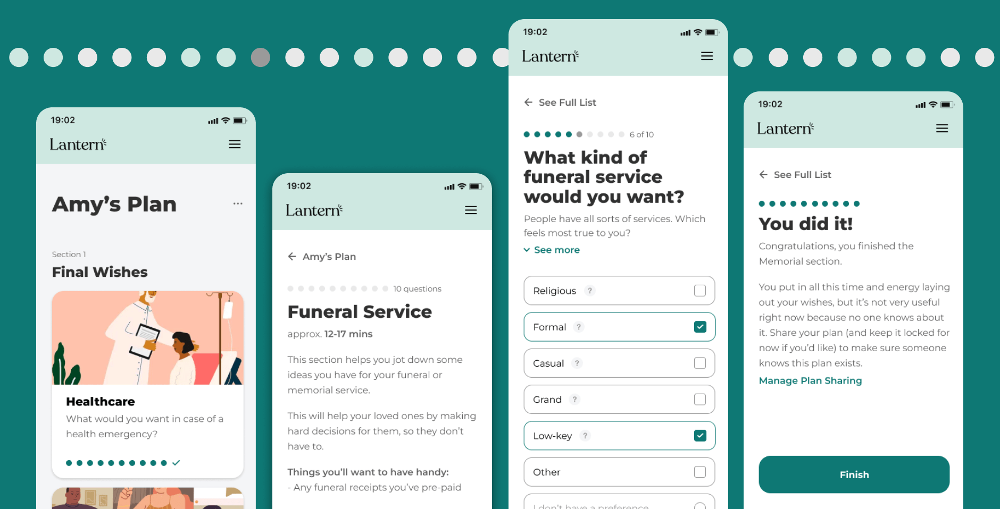Problem
When I joined Lantern, our main focus was to help people plan ahead for end-of-life. This idea was so radical and provocative that thousands of people per month saw the marketing pages and signed up for accounts. However, users didn’t actually do anything once they logged on. It seemed that the product itself was not living up to what these users (whom we called “pre-planners”) wanted.
The goals of this project were to:
- Understand how people thought about a pre-plan, uncovering their needs, wants, and pain points
- Redesign the pre-planning product so it delivers what people really want
Phase 1: User Research
Since this was the first time anyone had done user research on the pre-planner population, we decided we needed two rounds of user interviews. The first round would be broad, teaching us where to narrow in and focus for the second round.
User Interviews: Round 1
During the first round of user interviews, we tried to understand how people thought about and navigated the end-of-life space in general, without emphasizing the role of a single product like Lantern. It featured questions such as:
- When was the first time you thought about end of life planning?
- Why do you want to plan? How does it help you?
- Have you had end of life conversations with people around you? Tell me about a recent conversation.
- This may be an uncomfortable question and you are completely welcome to not answer it, but have you had an experience losing someone close to you? Do you think that has that impacted the way you think about end of life? How so?
User Interviews: Round 2
The first round of user interviews taught us that people who were interested in exploring the end-of-life space often didn’t know where to start or what they should be thinking about. They felt lost and overwhelmed. When considering a product like Lantern, above all they craved guidance and a sense of empowerment for each increment of progress.
For the second round of interviews, we followed that thread and probed more deeply on what sort of guidance would feel helpful yet still approachable. We incorporated more activities with users, such as:
- Product walkthroughs, learning how people respond to different aspects of the existing site
- Card sorts, learning how people conceptualize tasks fitting into categories
- Layout comparisons, learning how people respond to different formats on how tasks are presented
Affinity Map
With 8 user interviews completed, we proceeded to pull key quotes and organize them through an Affinity Map.
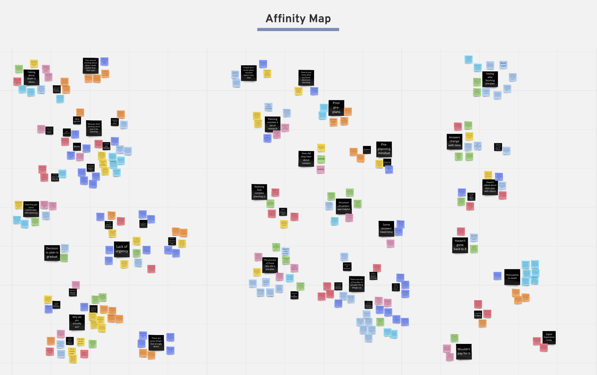Key Takeaways
The team had been operating under the assumption that people planning ahead wanted similar things from a product as people who were managing a loss. The user interview sessions revealed some surprising and insightful insights, underscoring that these are two completely separate populations.
Certain characteristics made the pre-planning scenario particularly unique:
- Unlike a scenario where someone is managing a loss (“after-loss”), there is little urgency with pre-planning. Barriers such as anxiety and fear around the subject of death as well as confusion about what actually needs to get done, combined with people’s natural laziness and a feeling like death isn’t imminent, create an easy case for procrastination. People think planning ahead for death is important, just not right now.
-
Once people begin pre-planning with Lantern, they realize how many things there are that they've never thought about. They find the structure helpful to learn more to satisfy their curiosity, and yet, many of them look around but don't actually fill things out or check things off because:
- It's too much effort to get their documents and accounts
- It's an emotional experience to engage with all the topics
- Some topics they don't really care about
- There are some things they want to talk to people about, but it's hard to think about starting conversations because the topic is so taboo
- They’re not sure of their answers; It's just hard to make decisions
- People who do fill out their pre-plan don’t always think about it like they’re “preparing for death,” rather they see it as a “responsible” thing to do. It’s like “getting their ducks in a row” or “getting prepared.” Just another thing to manage as a responsible adult.
Personas
Using the information we collected with our research summary, we created a set of personas to represent the 4 archetypes of users we observed. These archetype users emerged from their preferences with regard to 2 critical questions:
- How urgent and relevant is it to the user to plan ahead?
- How comfortable are they with confronting the idea of death?
It became clear that the key audience we wanted to target was the lower-right quadrant: users who were fairly comfortable thinking about death, but did not find the planning to be urgent. We elaborated on this person and called her Adulting Amy. Her main motivation in thinking about end-of-life is to get organized and plan ahead, like a responsible adult.
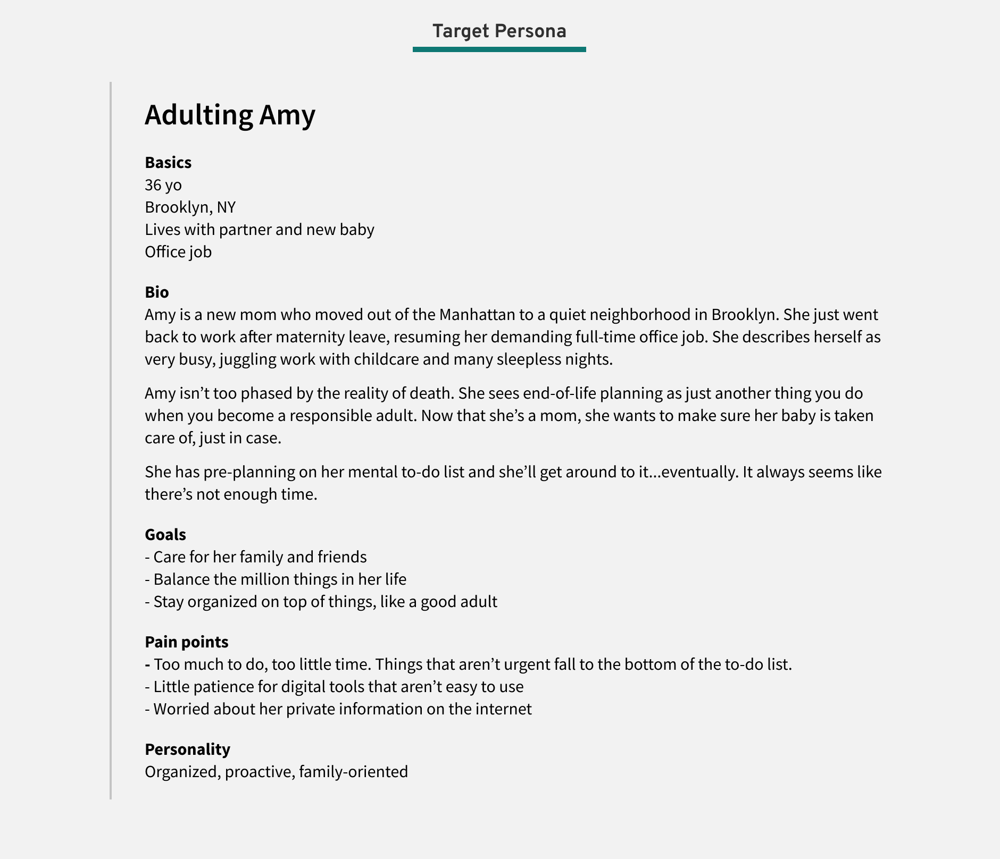User Journey Map
We also created a user journey of the existing user experience, noting the point people find Lantern and the pain points they have once they’re on the platform.
Particularly meaningful discoveries included:
- Reasons people pre-plan
- Making sure there’s a plan for their dependents
- Wanting to take back control from an out-of-control time
- Wanting to relieve burden on others
- It’s a responsible, adult thing to do
- Barriers to mactually making a pre-plan
- Confusion around how and what they should prepare
- They think it’ll be hard, that they’ll have to do a lot of research
- Fear of how much it’ll cost
- Laziness
- Busyness of life
- No urgency
- Anxiety/heaviness around the topic
- Barriers to engaging with tasks
- They’re overwhelmed by the number of tasks
- They don’t know where to start
- It’s hard to make decisions
- Writing things down feels too definite
- Not every section feels important
- They want to talk to loved ones about it but don’t know how
- It’s an emotional process
- It’s annoying to gather account info/passwords
Fully legible text can be found in the full User Journey Map PDF.
With our much deeper understanding of our Lantern users, we transitioned to explorations around our product redesign.
Phase 2: Design
High-level, we knew we needed to make the product more guided and approachable. We also wanted to give the feeling of a quick win when people did find the time and energy to fill out their plan since it was a task so easy for people to put off.
Design Principles
We made it a priority to align around a common set of principles to guide our design work. We created these principles to be particularly mindful of the sensitive topic we were addressing.
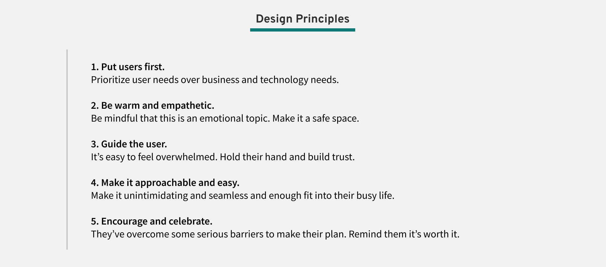Design Inspriation
I looked to various other products on the market for inspiration on how others have designed similar guided flows. I focused largely on survey questions and educational quizzes.
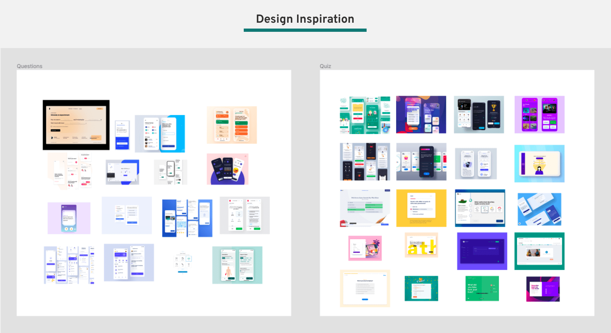Sketches
The first phase of the design process began with sketching out ideas on paper.
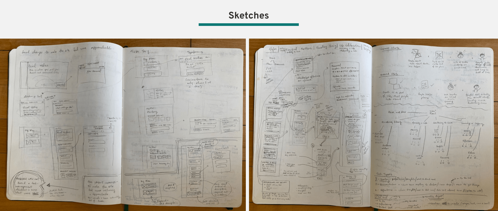Wireframes as Test Assets
After exploring different concepts on paper, we moved to Figma to map out the most promising variations of what the main task flow could look like for the purpose of testing different versions with users. We focused on the act of actually filling out responses, which would be the heart of the app.
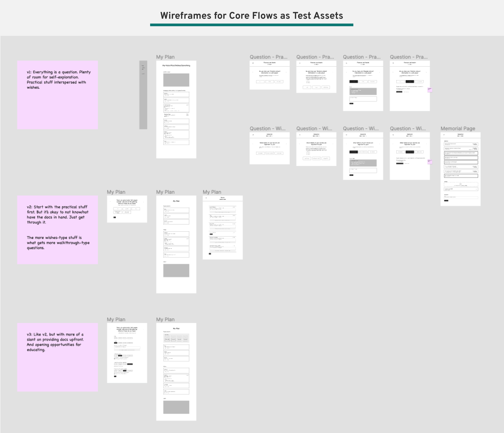User Testing
We ran more user interviews to test the design variations to learn how users responded. Key takeaways include:
- People like seeing just one question at a time. It makes them feel like they can focus on a single task, rather than getting overwhelmed by seeing the seemingly endless overall list of tasks.
- People really loved having multiple-choice options and seeing sample answers. For many types of questions (for example about planning a funeral), most people had no idea what was standard or even possible, so having existing choices provided helpful markers and guardrails.
- People wanted the option to skip an answer, or to mark something as an “I don’t have a preference” if they really didn’t have an opinion on the question.
Wireframes as Hi-Fi Blueprints
With key learnings under our belt about how our main guided flow would function, we created a series of wireframes that became the blueprint for higher-fidelity mock-ups.
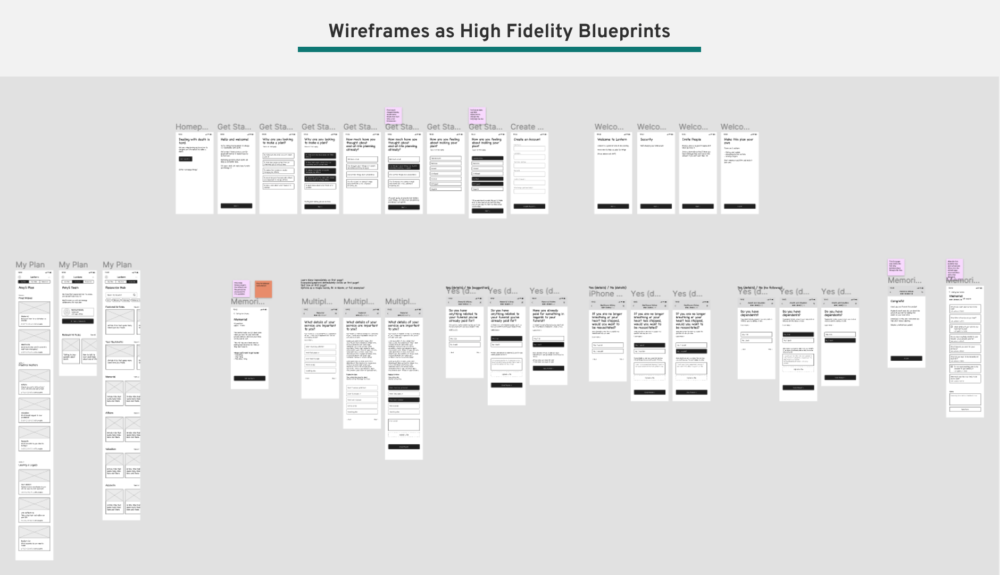High-Fidelity Designs
With the wireframes as the outline, we then created high-fidelity versions of the new guided pre-planning experience. We focused on mobile-first designs since we found many people used our app on their phones, though the designs were created to be fully responsive.
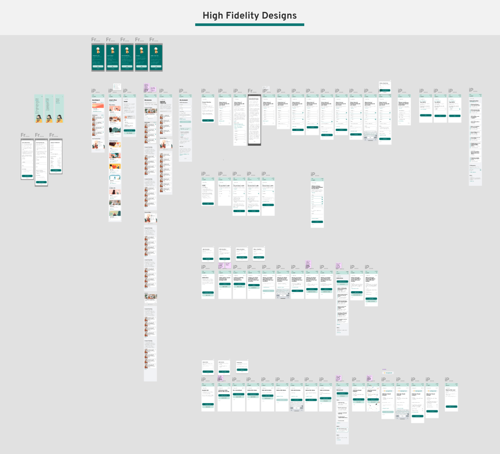Phase 3: Software Development and Launch
We worked closely with the Engineering team to scope and prioritize the tasks, using Trello as the main kanban system to track cards.
We had some external pressure to release a first version by a certain deadline, so as always, there was the art of the push and pull between design and engineering around what would make the first release and what would come as a later addition. We always kept in mind our design principles and the main user needs, as identified by user research, when making these decisions.
We had our initial launch in July 2021! We continued to make minor tweaks in the months following, responding to the user usage data.
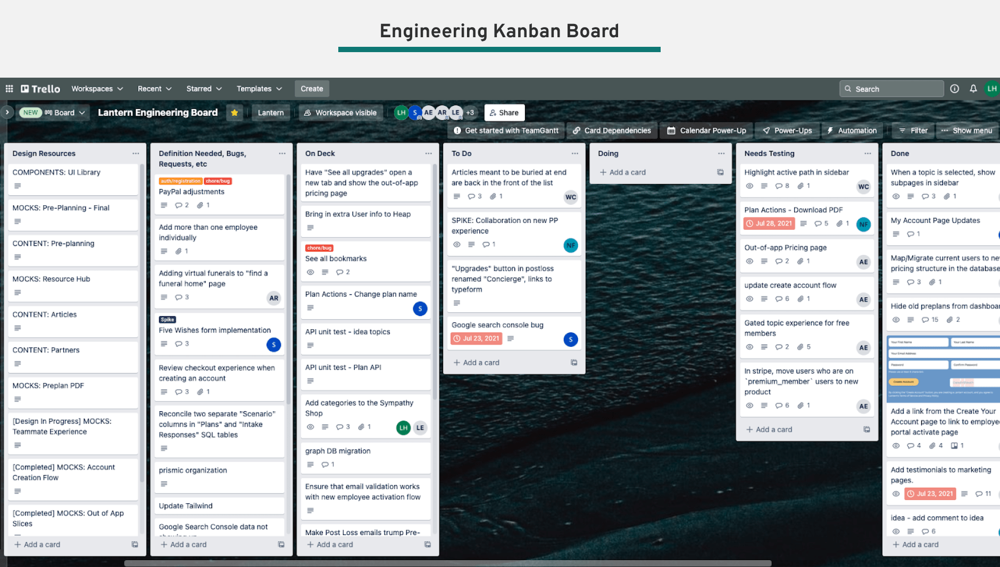Phase 4: Evaluation of the Redesign
After the redesign launched, we tracked its reception closely for the next two quarters. We used both quantitative and qualitative methods to evaluate the design.
Product Analytics
Using Heap and our other internal data tools, we were able to track engagement with our new pre-plan. We saw the number of people who engaged with a pre-planning task went from around 12-25% in Q2 to 60% in Q4, a whopping 5x increase! We also saw monthly repeat visits rise from 1.02 to 2.47, increasing by 2.5x! The data showed that the redesign yielded considerable growth and progress.
And not only were more people completing tasks, they were also completing more tasks on average and engaging in other important behaviors like adding a beneficiary. The guided flow had made other desirable actions easier to complete.
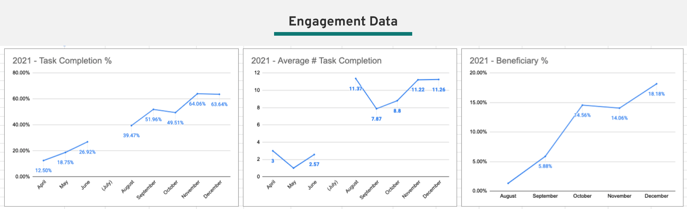Testimonials
In addition to the quantitative data telling us the redesign was more engaging and sticky, we also got a lot of great user feedback. People particularly liked the ease and simplicty of the flow, giving careful and friendly guidance through a process that is typically confusing and upsetting.
“The product is very well made, like someone taking your hand and helping you to take the steps”
Other websites, it almost felt like you were failing if you didn’t have all the information right there, right that second...Lantern let you move through each piece so you at least had something there.
“I like having it online...being able to work through things and save it and come back, and it’s a lot easier to update something online than when it’s in the pile of important papers”
“It only took me 5 or 10 minutes to realize like, okay I like this. Everything was laid out and I didn’t feel like I needed to dig through the website to figure it out”
“It’s like a friend, someone more experienced than you who is teaching you something”
In Conclusion
The redesign of the pre-planning experience was a major milestone in the Lantern compnay journey. As the first project that incorporated user feedback into the pre-planner experience, it was pivotal to set foundational knowledge around this user group and be much more effective in catering to their needs.
It is clear from the data, both the engagement numbers and testimonials, that we improved metrics in all categories and we’ve really struck something special with our new design. Here’s to making it even better with the projects to come!
A big thank you to Alyssa and Shae and the whole team that made it happen! It makes my heart happy to know that with this increased engagement, more people will leave far more information for their loved ones after they pass, leading to a much greater sense of ease and reduced burden when they need it most.